AI systems deployed in the real world must contend with distractions and out-of-distribution (OOD) noise that can destabilize their policies and lead to unsafe behavior. While robust training can reduce sensitivity to some forms of noise, it is infeasible to anticipate all possible OOD conditions. To mitigate this issue, we develop an algorithm that leverages a world model's inherent measure of surprise to reduce the impact of noise in world model-based reinforcement learning agents. We introduce both multi-representation and single-representation rejection sampling, enabling robustness to settings with multiple faulty sensors or a single faulty sensor. While the introduction of noise typically degrades agent performance, we show that our techniques preserve performance relative to baselines under varying types and levels of noise across multiple environments within self-driving simulation domains, CARLA and Safety Gymnasium. Furthermore, we demonstrate that our methods enhance the stability of two state-of-the-art world models with markedly different underlying architectures: Cosmos and DreamerV3. Together, these results highlight the robustness of our approach across world modeling domains.
World models are prone to misinterpreting the state when they see something unknown. A clean posterior during training can become unreliable under novelty, causing bad user experiences or unknown agent behavior.
This work studies a focused subset of novelty adaptation: if transitions become noisy, can an agent recognize which observations are unreliable before the policy acts?
For example, an autonomous agent may still need to follow the same high-level objective, such as staying in lane or stopping at a sign, while OOD visual artifacts, limited visibility, or sensor corruption distort the lower-level state used by the policy. When that state becomes incoherent, the policy can no longer reliably translate the objective into coherent primitive actions such as steering, braking, or maintaining course.
Chrome
Gaussian
Glare
Jitter
Occlusion
The world model learns a relationship between observations, latent state, and posterior predictions.
OOD noise, distractors, or sensor failures push the model away from the true state.
Surprise recognition rejects corrupted information and helps the agent degrade gracefully.
In autonomous driving, failure often starts before an AI system even has a chance to reason correctly. Visual artifacts, limited visibility, and feed latency can corrupt observations while the policy still receives them as if they were clean.
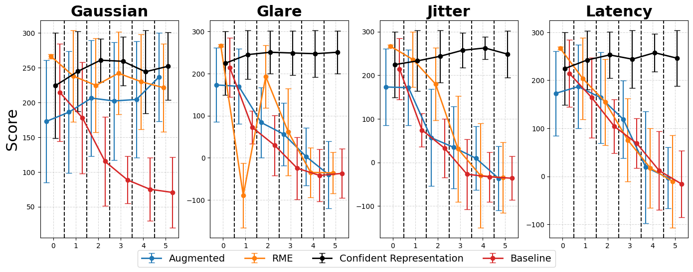
CARLA stop-sign task performance as more sensors fail.
WISER addresses different ways the model can fail to interpret observations. The rejection score M(x) checks whether an input is clean, lightly noisy, or too noisy; the denoiser D(x) supports recovery when the signal is salvageable; and a state machine controls whether the agent retains predictive context or switches back toward ground-truth context.
| Noise Type | Base Model | Rejection Sampling | Avg Diff | Relative % |
|---|---|---|---|---|
| Chrome | 0.774 | 0.808 | 0.034 | 3.13 |
| Gaussian | 0.767 | 0.810 | 0.043 | 5.00 |
| Glare | 0.726 | 0.809 | 0.083 | 11.98 |
| Jitter | 0.719 | 0.812 | 0.093 | 12.25 |
| Occlusion | 0.787 | 0.810 | 0.023 | 3.18 |
| Overall | 0.755 | 0.810 | 0.055 | 7.11 |
Cosmos Predict-2.5 quality scores under corrupted input videos. Rejection sampling improves overall generation quality by 7.11%.
With a single sensor, there is no alternative stream to immediately fall back on. WISER uses the world model's abnormal reconstruction behavior and surprise score to avoid taking policy actions from observations that appear corrupted.
In the slide framing, rejection sampling achieves an overall relative improvement of 7.11% across tested noise augmentations, with especially strong gains in jitter and glare scenarios.
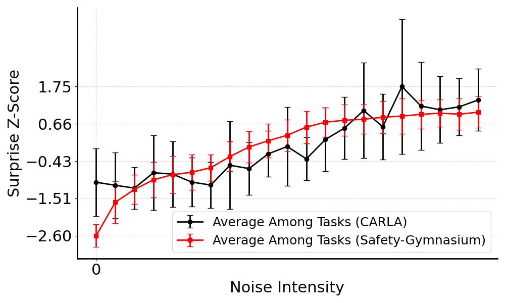
Surprise increases as noise intensity rises across tested CARLA and Safety Gymnasium environments.
The multi-sensor setting asks a harder question: can we find a subset of sensors that still predicts a coherent state in the worst case? WISER breaks multi-sensor processing into two sequential phases.
Individual analysis: process and validate each sensor or representation independently.
Sensor compatibility: evaluate whether accepted representations integrate into a coherent state.
Train a descriptive latent structure and search faster for compatible sensors under corruption.
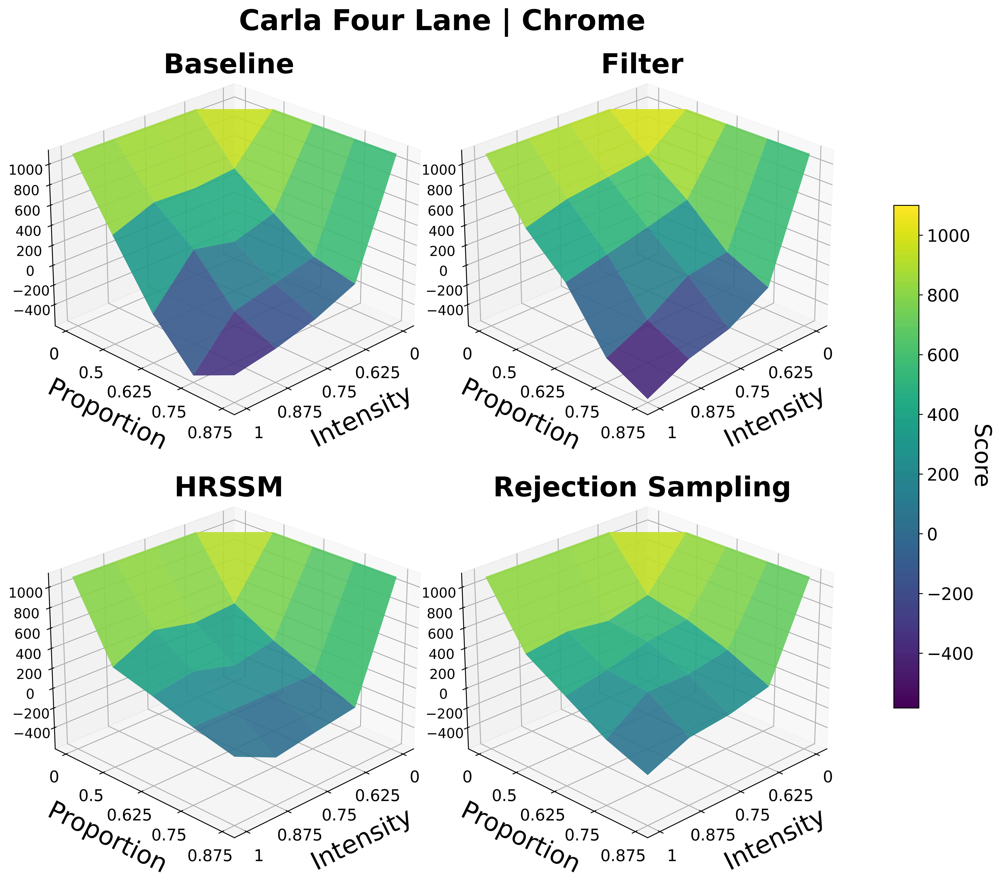
CARLA Four Lane under chrome perturbations.
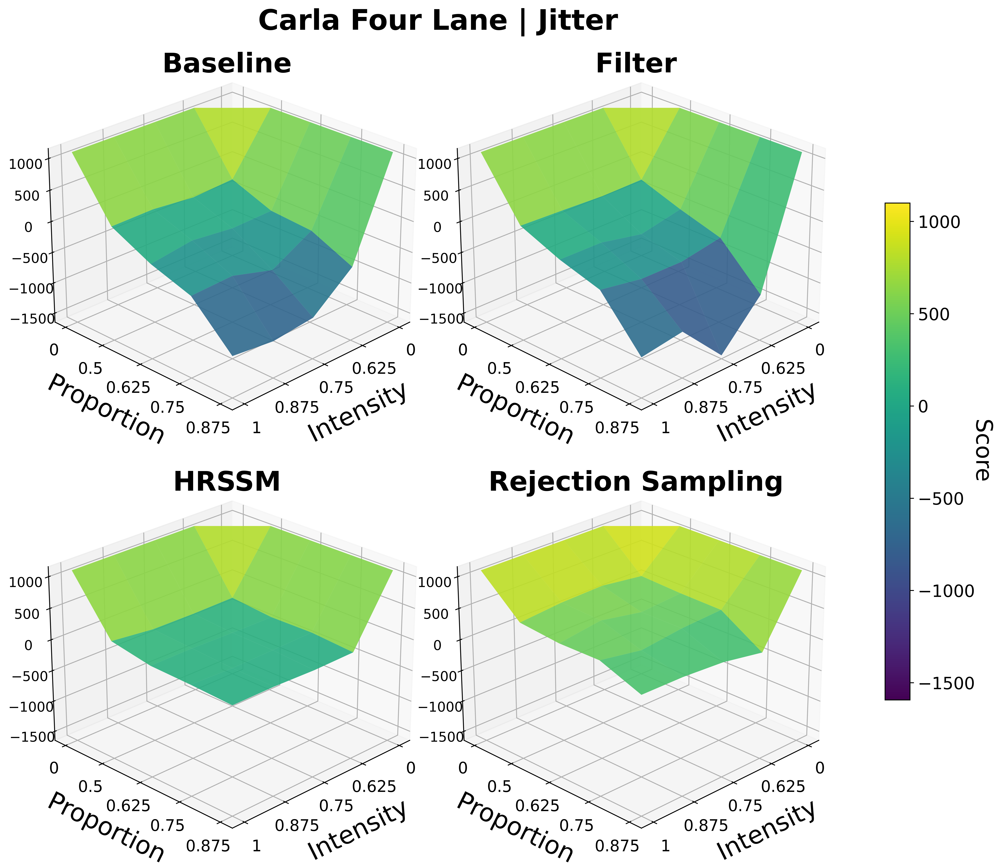
CARLA Four Lane under jitter perturbations.
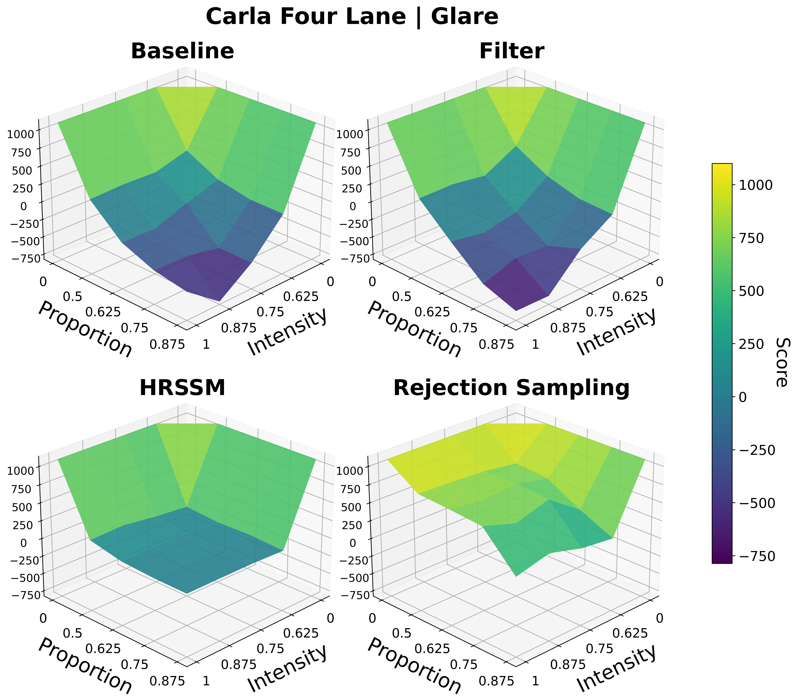
CARLA Four Lane under glare perturbations.
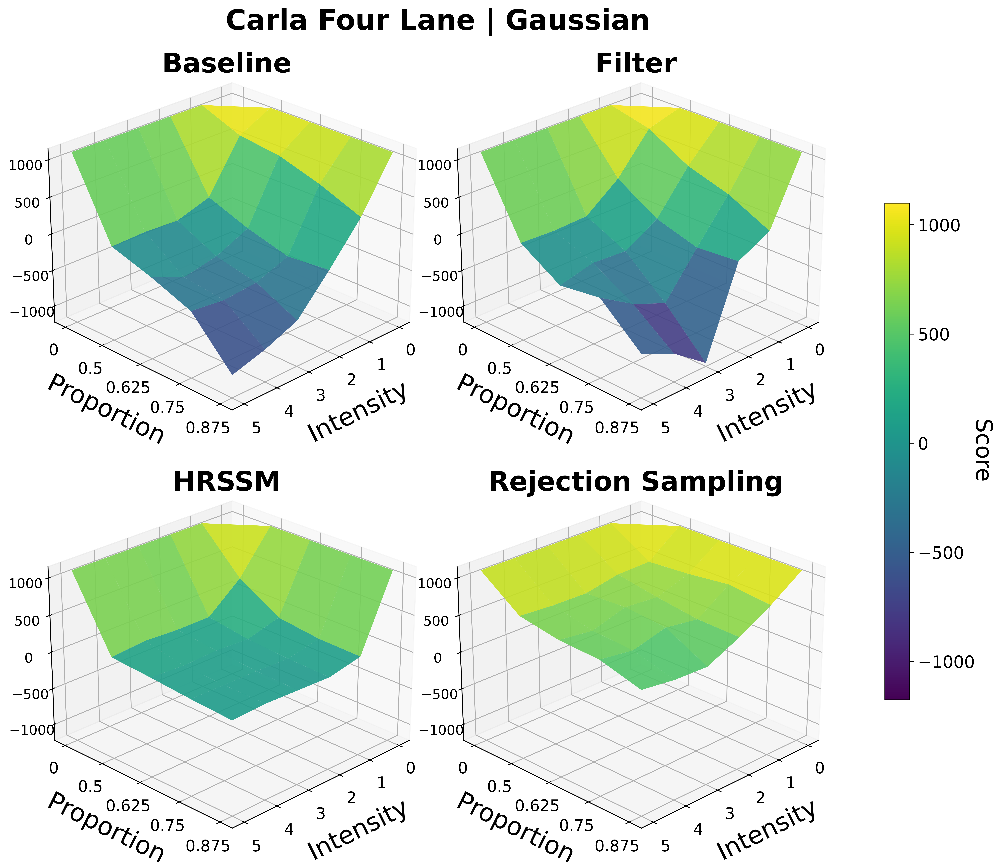
CARLA Four Lane under Gaussian noise.
Across CARLA and Safety Gymnasium domains, WISER preserves performance relative to baselines under varying types and levels of noise. The evaluation covers score behavior, cost-related safety metrics, and robustness across different world model architectures.
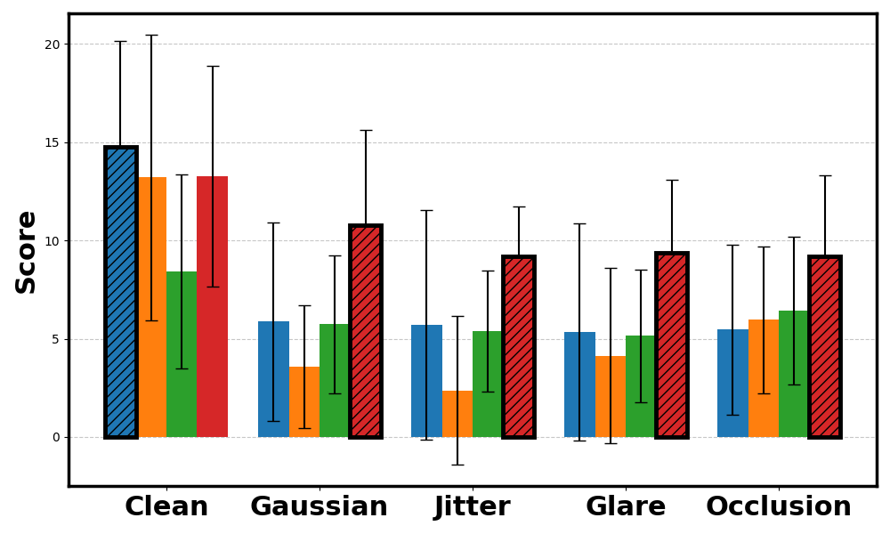
PointGoal score.
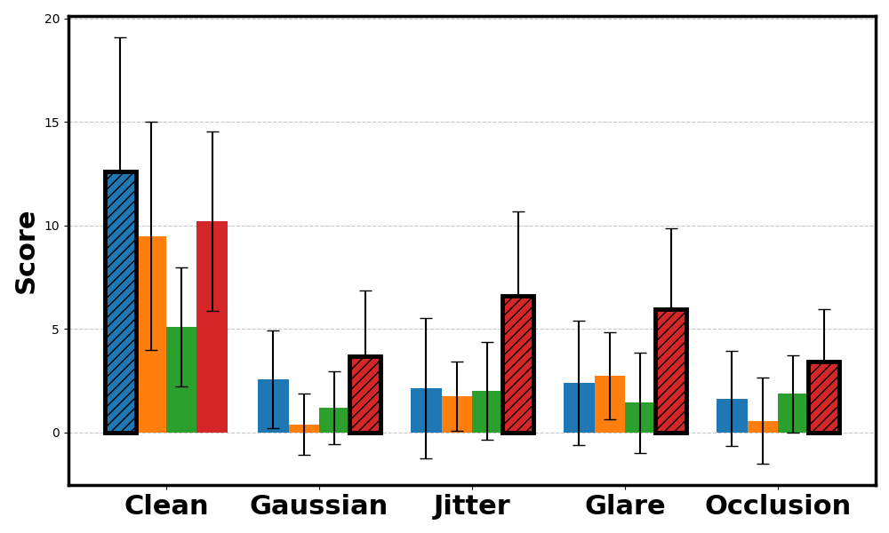
PointButton score.
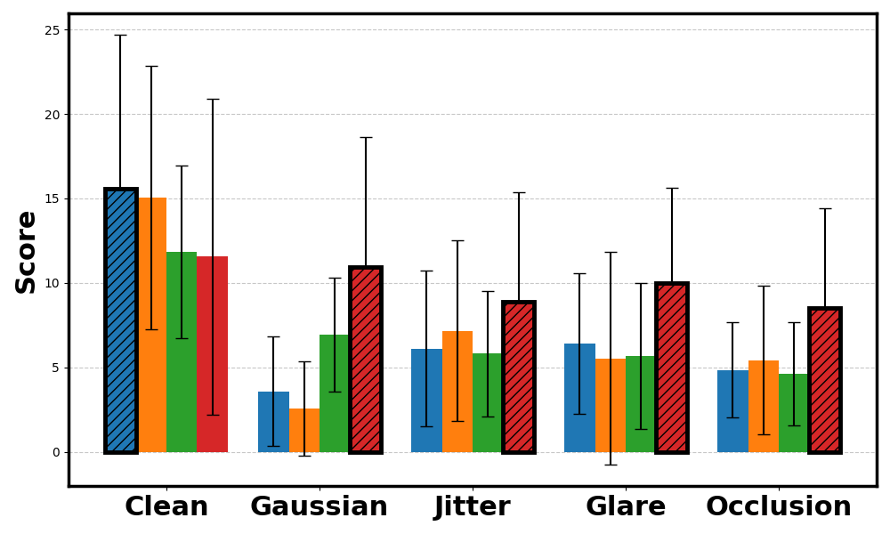
CarGoal score.
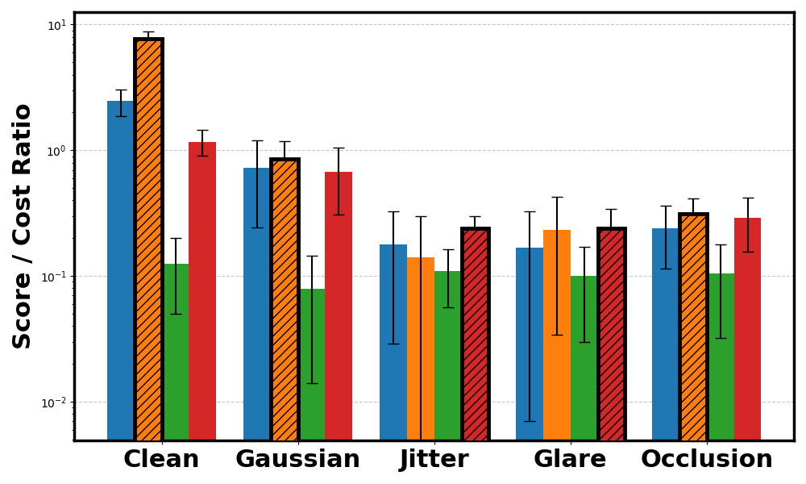
PointGoal cost ratio.
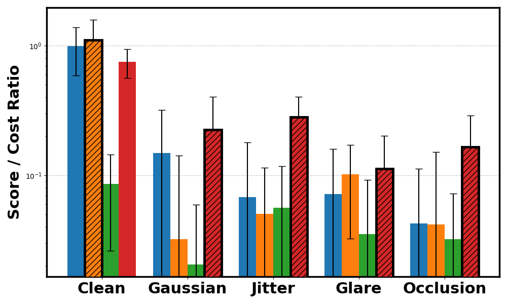
PointButton cost ratio.
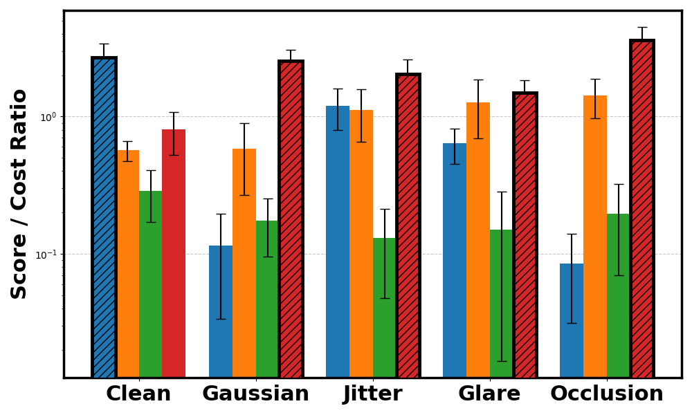
CarGoal cost ratio.
@misc{zollicoffer2025worldmodelrobustnesssurprise,
title={World Model Robustness via Surprise Recognition},
author={Geigh Zollicoffer and Tanush Chopra and Mingkuan Yan and Xiaoxu Ma and Kenneth Eaton and Mark Riedl},
year={2025},
eprint={2512.01119},
archivePrefix={arXiv},
primaryClass={cs.LG},
url={https://arxiv.org/abs/2512.01119}
}